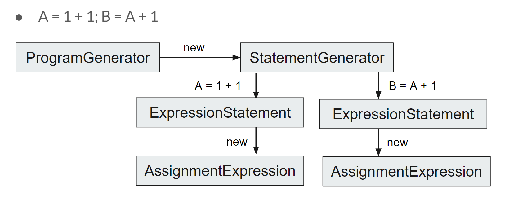

Note: Readers can open README.html file to read the printed version of the document.
T3 Python ContentPython 3 implemented in TypescriptWhy Python?UsageUser ManualCalculatorVariable Assignment and ReusePython Built-in Data structures: Lists & DictionariesPython Built-in Functionsprint Functionrange FunctionLoopsFor LoopWhile LoopIf Statement / Conditional StatementBreak / Continue / Pass StatementBreak StatementContinue StatementPass StatementFunction DefinitionVariable Scoping StatementsGlobal StatementNonlocal StatementPython For Loops Python Built-in Data structures: Lists & DictionariesVisualising the Environment Developer ManualParsing Tool: Antlr4tsGrammar FilePython3LexerPython3ParserPython3ListenerPython3VisitorGenerator ClassesIndent & Dedent TokensParsing ResultEnvironment in Python3Python Loops Loops ImplementationBreak / Continue Statement in LoopFunction Declaration & ApplicationVariable Scoping StatementsGlobal StatementNonlocal StatementTestingError messagesUsing your x-slang in local Source Academy
This page outlines our work done so far in implementing the Python 3 programming language in Typescript. This documentation covers the key considerations taken when building the Parser using the Antlr4 tool, some noteworthy features of Python 3 that we have covered in our interpreter, and example use cases.
Source Code for the X-Frontend: x-frontend-ts-ss-zlx
As one of the most popular programming languages in the world, Python provides a lot of benefits to programming novices and experts alike. Through implementing the language's basic grammar and some of its most commonly used standard library functions, our team has a deepper understanding and appreciation for Python.
To build,
xxxxxxxxxx41$ git clone https://<url>/x-slang.git2$ cd x-slang3$ yarn4$ yarn buildTo add "x-slang" to your PATH, build it as per the above instructions, then run
xxxxxxxxxx21$ cd dist2$ npm linkIf you do not wish to add "x-slang" to your PATH, replace "x-slang" with node dist/repl/repl.js in the following examples.
To try out Python in a REPL, run
xxxxxxxxxx11$ x-slang '1 * 1'Hint: In bash you can take the PROGRAM_STRING out of a file as follows:
xxxxxxxxxx11$ x-slang "$(< my_source_program.js)"All supported Python syntax will be listed in User Manual
This Python implementation can be used as calculator. It supports both number calculation and logical calculation. The supported operators are + (add), - (minus), * (multiply), / (division), // (Integer division), ~ (not), % (mod), ** (power), & (logical and), | (logical or), == (equality), != (not equal), < (less than), > (larger than), <= (less or equal), >= (greater or equal), && (and), || (or), and, or, not, True, False.
For example, in order to calculate 2 to the power 10, use:
xxxxxxxxxx112 ** 10 # Get 1024Calculate a number will get the number itself:
xxxxxxxxxx1110 # Get 10To test whether the integer 100 can be divide by 3 or not:
xxxxxxxxxx11100 % 3 == 0 # Get FalseThis Python implementation supports the assignment expression. Variables that been assigned can be reused in later program. The value that being assigned can be a number, a calculator expression, or a calculator expression that variable.
For example, assign number 1 to variable a and reuse a:
xxxxxxxxxx31a = 123a # Get 1Assign the result of 2 to the power 10 to variable b:
xxxxxxxxxx31b = 2 ** 1023b # Get 1024Assign an expression that contains variables to a new variable:
xxxxxxxxxx31a = 12b = 23c = a + b + 1 # Get 4This Python implementation supports two Python basic built-in data structures: List and Dictionary. User can use square bracket subscripts to get elements of a list or dictionary
For example, define a list of [1, 2, 3, 4]
xxxxxxxxxx21arr = [1, 2, 3, 4]2arr[2] # Get 3Defines a mapping dictionary between strings:
xxxxxxxxxx51dictionary = {2 "hello": "Hello, World!",3 "bye": "Goodbye!"4}5dictionary["hello"] # Get "Hello, World!"We have implemented two very commonly used built-in functions for Python - print and range. To implement these we took note of how standard library functions are implemented in js-slang to guide us.
print FunctionThe implementation of the print function involves evaluation the argument list of the function.
Examples:
xxxxxxxxxx61print("Hello, World") # Get "Hello, World"23print(1 + 2) # Get 345a = 16print(a) # Get 1range FunctionThe range function in python takes in a stop value as a required value and an optional start and step values in order to return a list of numbers. If the stop is not specified it defaults to 0 and if the step is not specified it defaults to 1.
In our implementation we have altered this function slightly in order to take in 2 required fields: the start and the stop.
Examples:
xxxxxxxxxx11print(range(0, 5)) # Get [0, 1, 2, 3, 4]This Python implementation supports for loops and while loops in Python.
For loop will iterate every element of the given list. In each iteration, for loop will execute the body program once.
xxxxxxxxxx61arr = [1, 2, 3, 4, 5]2a = 03for i in arr:4 a = a + i56print(a) # Get 15 Range function is usually used in for loop:
xxxxxxxxxx51b = 02for i in range(1, 6):3 b = b + i45print(b) # Get 15While loop tests an expression in every iteration. If the expression testing result is not False or 0, the while loop will execute its body program once and test the testing expression again before the next execution. The cycle will not stop until the testing result is False or 0.
For example, when a is larger than 0, add count by one in each iteration:
xxxxxxxxxx71a = 52count = 03while a > 0:4 count = count + 15 a = a - 167print(count) # Get 5If the testing expression will not be False or 0 in any case, the loop will not stop except using break statement
xxxxxxxxxx51a = 02while True: # Infinite Loop3 a = a + 145a # Will not be executedThis implementation of Python supports if-elif-else statement in Python. Different part of program will be executed according to the test of testing expression
For example, we can test variable a is positive or negative:
xxxxxxxxxx91a = 22if a > 0:3 b = "Variable a is positive"4elif a < 0:5 b = "Variable a is negative"6else:7 b = "Variable a is 0"89print(b) # "Variable a is positive"The if statement with two branches can also uses conditional expression in Python.
For example, test if 3 is larger than 2:
xxxxxxxxxx11"larger" if 3 > 2 else "smaller" # Get "larger"Sometimes it is necessary to jump out of the loop or jump to next cycle of the loop. The Break / Continue statement will do that. In other cases, we do not need the program to do anything in some if branches. Then we can use Pass statement.
When break statement is being executed, the program will jump out of the loop immediately.
For example, jump out of the infinite loop when variable a is equal to 5:
xxxxxxxxxx71a = 02while True:3 if a == 5:4 break5 a = a + 167print(a) # Get 5When continue statement is being executed, the program will jump to the next cycle of the loop immediately.
For example, add 1 to variable a except the case that a is equal to 3:
xxxxxxxxxx71a = 02for i in range(0, 5):3 if a == 3:4 continue5 a = a + 16 7print(a) # Get 4When pass statement is being executed, the program will not do anything:
For example, do not do anything when variable is equal to 3:
xxxxxxxxxx91a = 02for i in range(0, 5):3 if a == 3:4 pass5 else:6 a = a + 17 8 9print(a) # Get 4This Python implementation supports to define functions with default value, return value and recursion.
For function definition, use def keyword with a function name and function arguments. The return statement will return the result of its body expression
xxxxxxxxxx41def f(a, b):2 return a + b34f(2, 4) # Get 6This Python implementation also supports default value, the default value can be defined in function declaration. The arguments with default value, however, can only located in the tail of the argument list.
xxxxxxxxxx91def f(a, b = 2):2 return a + b34f(2) # Get 45f(2, 4) # Get 66f(a = 3, b = 4) # Get 778def f(a = 2, b): # Illeagal9 return a + b This Python implementation also supports recursion. That is, call the function itself in the function definition.
For example, a classic recursion program: factorial
xxxxxxxxxx71def fac(n):2 if n == 0:3 return 14 else:5 return n * fac(n - 1)67fac(6) # Get 720One thing to note is that, all variables that defined inside function are local variables. If global variable is needed inside a function, please use
globalstatement
There are two keywords implemented in Python in order to define the scope of variables. These keywords are used inside of functions. This section will detail the use of these keywords and our implementation logic.
All variables that defined inside function are local variables. It will not affect the value of the global valuables:
xxxxxxxxxx71a = 123def changeA():4 a = 25 return a67print(a) # Still get 1The global keyword allows you to modify the variable in the global scope, i.e. the function body scope It is used to modify a global variable and make changes to the variable in a local context, which changes the value of the variable globally.
Example:
xxxxxxxxxx61a = 12def changeA():3 global a4 a = 25changeA()6print(a) # Get 2Another method to make the scoping of variables larger is using nonlocal statement.
The nonlocal keyword allows you to modify the variable in the parent scope of the current scope, i.e. the function body scope It is used to modify a variable located in the parent environment frame and make changes to the variable in a local context, which changes the value of the variable in the parent environment frame.
Example:
xxxxxxxxxx101a = 12def f():3 a = 24 def g():5 nonlocal a6 a = 37 g()8 return a9f() # Get 310a # Get 1The Python for loops are slightly different to the Javascript for loops, and bear more resemblance to the JS forEach function.
Essentially Python for loops consist of an iterator, an interated value and finally the for loop body. In every iteration of the for loop body, the iterator takes on the next value of the iterated and the loop body is performed. The final value of the iterator is retained in the current environment frame.
Examples:
xxxxxxxxxx61arr = [1, 2, 3, 4, 5]2for i in arr:3 do something...45for i in range(1, 6):6 do something...We have implemented two of the basic Python built-in data structures - lists and dictionaries. User can use square bracket subscripts to get elements of a list or dictionary
Examples:
xxxxxxxxxx81arr = [1, 2, 3, 4]2print(arr[2])34dictionary = {5 "hello": "Hello, World!",6 "bye": "Goodbye!"7}8print(dictionary["hello"])For visualising the environment, our initial plan was to follow the environment visualiser in cadet-frontend. However we were unable to successfully integrate it - anytime a program was run with a breakpoint set, it would cause the frontend to error out.
We decided to try developing the environment visualiser with a different approach by applying what we had learnt when implementing the Python built-in functions. We created a new built-in function env() in order to return the environment at that point in the program's execution. This works very similarly to the debbuger + environment visualiser tools that are used in the source-academy frontend.
This function loops through the Context and seperates the different frames into that for the program (i.e. the global environment), and the function environments (if the env() function is called inside a function body). This function is especially useful when used in combination with the use of Python keywords.
Example 1:
xxxxxxxxxx81 a = 12 b = 23 def f():4 c = 35 return env()6 f()78>>> {"f": {"c": 3}, "program": {"a": 1, "b": 2, "f": "function declaration"}}Example 2:
xxxxxxxxxx91 a = 12 b = "hello"3 def f():4 global a5 a = a + 76 f()7 env()89>>> {"program": {"a": 8, "b": "hello", "f": "function declaration"}}
Antlr4 is a useful parsing tool for grammar analysis. In this project, because our develop language is TypeScript, we used Antlr4ts, which is the TypeScript version of the Antlr4, to parse the input program.
Antlr4 will parse the program based on the grammar that defined in g4 file. We combined two Python syntax g4 files: https://github.com/antlr/grammars-v4/blob/master/python/python3-ts/Python3.g4 and https://github.com/antlr/grammars-v4/blob/master/python/python3-js/Python3.g4.
Then we can apply Antlr4ts based on our Python3.g4 file. Four new files will be generated: Python3Lexer, Python3Parser, Python3Listener and Python3Visitor.
In file Python3Lexer, Antlr4ts will analyze every word in the input program, and define key words and generate Indent / Dedent Tokens. After that, the parser will be able to parse the program based on different kinds of elements and Tokens.
In file Python3Parser, a tree will be established. Every grammar rule in Python3.g4 file will become a Tree Node and their relationship between each other will be defined. After that, the Listener and the Visitor will be able to understand program based on the Python3 grammar.
Python3Listener provides methods to go in and go out of the tree node, so that Visitor will be able to go through the whole tree structure using these methods.
Python3Visitor provides methods for programmers to go through every tree node and methods to look at its child node. After that, the programmers can define the return data structure of the parsing result. In our implementation, Python3Visitor will be extended into several Generator Classes
There are totally four different classes that generated from the class Python3Visitor. We can divide them into three kinds: Program Generator, Statement Generator and Expression Generator & Expression List Generator.
For example, for the specific program A = 1 + 1; B = A + 1 . A program generator will return the parsing result, its body will create a Statement Generator using "new" method. For the Statement Generator generated by Program Generator, it will recognize that this program consists of two Expression Statements. So the Statement Generator will generate two Expression Statements. And for each Expression Statements, it will generate an Assignment Expression using new method. The Assignment Expression will also create new Expression Generators so that the Binary Expression will be generated through these Expression Generators. Through these method, the difference between Statement and Expression will be clear and the parsing process will be more organized

One of the important Python characteristic is that Python do not use brace blocks and it separate blocks by indentation. This is a tricky problem, as there is no obvious symbol for parser to separate the blocks. So, one of the Python3Lexer's task is to generate INDENT and DEDENT tokens. In our implementation, the INDENT token should be generated after every Compound Statement Colon. The DEDENT token should be generated after block is finished. When there are multiple blocks finish together, multiple DEDENT tokens will be generated.
For example, the tokens should be generated like:
xxxxxxxxxx61def f(a): {INDENT}2 if a > 0: {INDENT}3 a = a + 1 {DEDENT}4 else: {INDENT}5 a = a - 1 {DEDENT} {DEDENT}6f(3)In order to generate INDENT & DEDENT tokens correctly, an algorithm is needed:
Initially, an indentation stack is defined as IS = [ 0 ]
Every time when there is a new line:
Firstly pairing the braces, brackets and parentheses, so that we can make sure it is not inside a function application code.
Then we can get the indentation number N:
Through this algorithm, the INDENT & DEDENT tokens can be correctly generated so that the parsing tool can work normally.
Here are two examples of parsing result:
The list declaration:
xxxxxxxxxx321a = [1, 3]23# Parsing Result:4'''5{6 type: 'Program',7 sourceType: 'script',8 body: [9 {10 type: 'BlockStatement',11 body: [12 {13 type: 'ExpressionStatement',14 expression: {15 type: 'AssignmentExpression',16 operator: '=',17 left: { type: 'Identifier', name: 'a' },18 right: {19 type: 'ArrayExpression',20 elements: [21 { type: 'Literal', value: 1 },22 { type: 'Literal', value: 3 }23 ]24 }25 }26 }27 ]28 }29 ]30}3132'''The If Statement:
xxxxxxxxxx261if True:2 pass34# Parsing Result:5'''6{7 type: 'Program',8 sourceType: 'script',9 body: [10 {11 type: 'IfStatement',12 test: { type: 'Literal', value: true, raw: 'True' },13 consequent: {14 type: 'BlockStatement',15 body: [16 {17 type: 'BlockStatement',18 body: [ { type: 'PassStatement' } ]19 }20 ]21 },22 alternate: { type: 'EmptyStatement' }23 }24 ]25}26'''Much like the environment in Source, our implementation of the environment in Python is a stack of frames. The variables that stored in the current frame is called local variable and the the variables that stored in the base frame (global frame) is called global variables. When a variable is needed, the interpreter will firstly look for the variable at the current frame. If the variable is not found, search the variable in the parent environment frame. This process should be repeated until the base frame. If the variable is still not found, then the interpreter will report error "variable is not defined".
For function application in Python3, the interpreter will create a new empty frame for the function. This frame will be deleted after the function application. That's why all the variables defined in function will be the local variable. There are however other ways the environment can be changed, i.e. by using the python specific global and nonlocal keywords.
In our implementation, Python while loops are evaluated using a Typescript while loop, where as long as the condition is satisfied the while loop body is evaluated again. Python for loops are a bit different to for loops in Typescript, their functionality is more similar to that of the forEach function in Typescript. A for loop in Python involves an iterator, an iterated value and a function body. For every iteration of the for loop, the iterator will be assigned with the next value in the iterated before the for loop body is evaluated.
We have also implemented break and continue statements to be used in Python loops. Break statement returns a BreakValue object and a continue statement returns a ContinueValue object. Whenever a blockstatement evaluates to BreakValue or a ContinueValue the current cycle of the loop stops. If its a BreakValue then the loop is exited and if its a ContinueValue then the next iteration begins.
When a function is declared, we assign the whole declaration node into the current environment frame using the name of the function as the identifier. When a function is applied, we get the assigned declaration from the environment. Then we create an empty a new empty frame for the function body and we push it onto the environment. In the function body if a block statement evaluates to a return value we end evaluation of the function body and return the value. Once the function body has returned the final value, we check the global list and nonlocal list and then finally pop the function body frame off the environment stack.
The logic we have used to implement this keyword is as follows:
The logic we have used to implement this keyword is as follows:
There are several test case in /test folder. Tester can copy the code to the local source academy and execute the program.
To enable verbose messages, have the statement "enable verbose"; as the first line of your program.
There are two main kinds of error messages: those that occur at runtime and those that occur at parse time. The first can be found in interpreter-errors.ts, while the second can be found in rules/.
Each error subclass will have explain() and elaborate(). Displaying the error will always cause the first to be called; the second is only called when verbose mode is enabled. As such, explain() should be made to return a string containing the most basic information about what the error entails. Any additional details about the error message, including specifics and correction guides, should be left to elaborate().
Please remember to write test cases to reflect your added functionalities. The god of this repository is self-professed to be very particular about test cases.
A common issue when developing modifications to x-slang is how to test it using your own local frontend. Assume that you have built your own x-frontend locally, here is how you can make it use your own x-slang, instead of the one that the Source Academy team has deployed to npm.
First, build and link your local x-slang:
xxxxxxxxxx31$ cd x-slang2$ yarn build3$ yarn linkThen, from your local copy of x-frontend:
xxxxxxxxxx21$ cd x-frontend2$ yarn link "x-slang"Then start the frontend and the new x-slang will be used.